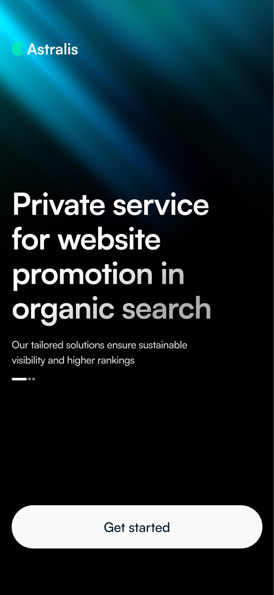
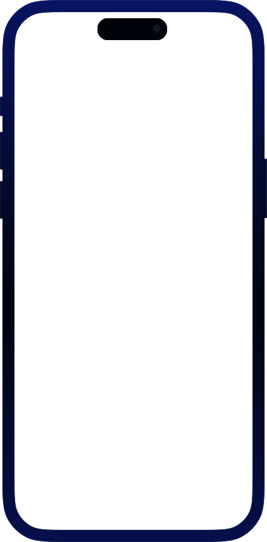
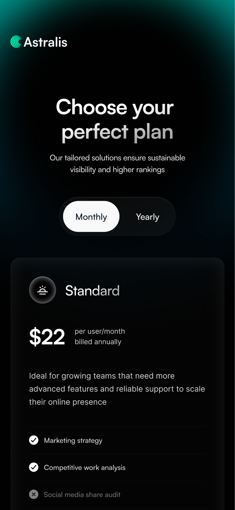
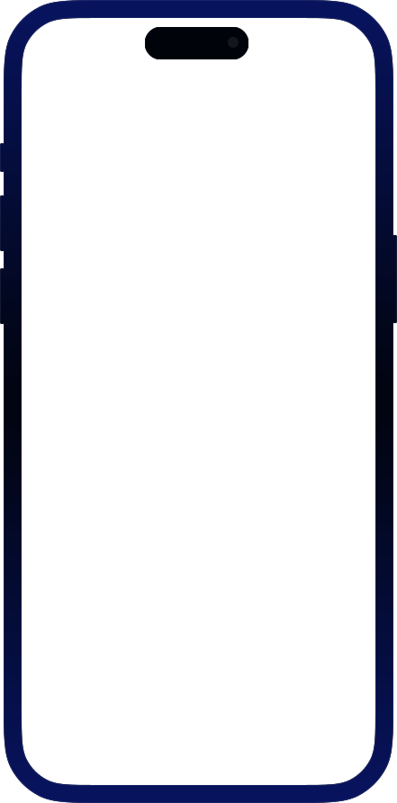
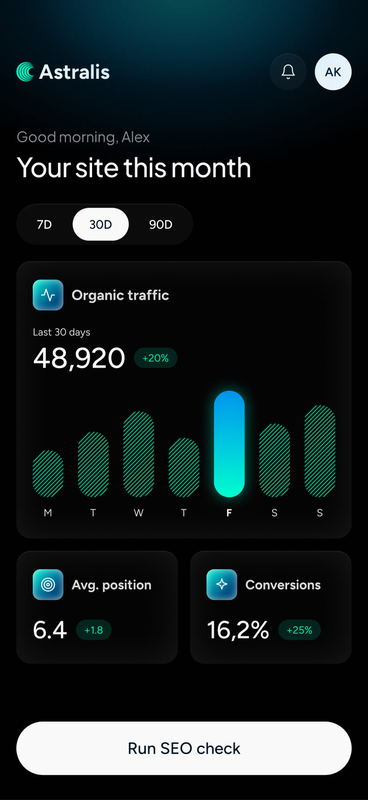

Reports nobody can read
Agency reports feel vague or too technical, so an operations lead can’t connect rankings to leads and revenue
Astralis is a private platform for organic website promotion: analytics, automation and SEO tools for businesses. In four weeks I took it from brief to hand-off: the brand identity, the landing page and the dashboard flow
The people who pay for SEO are rarely SEO experts, so the work was about turning rankings into something a business owner can read and act on




Organic traffic keeps getting harder to win: competition grows, manual work eats time, and ready-made services rarely show what they actually do
Agency reports feel vague or too technical, so an operations lead can’t connect rankings to leads and revenue
Clients hand their site and data to a private service they can’t look inside. The landing page had to prove value, privacy and expertise before anyone asked to join
Analysis, research, UX, UI and testing had to overlap, and a remote team built straight from the layouts
I started with the brief, jobs to be done and interviews, built a persona around a business owner who isn’t an SEO expert, and designed every section to answer one of their questions
The page moves from problem to proof: what you get, a free SEO analysis, how the work goes and what clients say. Each block answers the question the previous one raises
The dashboard speaks in traffic, positions and conversions with short trend labels, and reports arrive on their own instead of by request
A calm dark palette with cerulean and mint accents and one geometric typeface, borrowing the confidence of crypto and SaaS products
Tests showed a gap I didn’t expect. The landing page sold a calm, premium private service, but after the invite people landed in a technical dashboard full of metrics, statuses and SEO terms, and started looking for what the numbers meant instead of starting work. I rebuilt the step between the page and the product: one set of terms and one visual system for both, a short onboarding inside the dashboard, and an obvious first action, running the first SEO check
After the rework more people activated their accounts, and more of them ran their first SEO check in the very first session
Value, privacy and the next step are clear without a sales call, and the free analysis gives a low-risk way in
A short onboarding inside the dashboard leads straight to the first SEO check, so new clients start working instead of decoding metrics
Desktop and mobile layouts, a UI kit and a specification went to the developers along with an interactive prototype of the main flow
The landing page and the Mini App share the same terms and visual system, so the product feels like the service people asked to join
